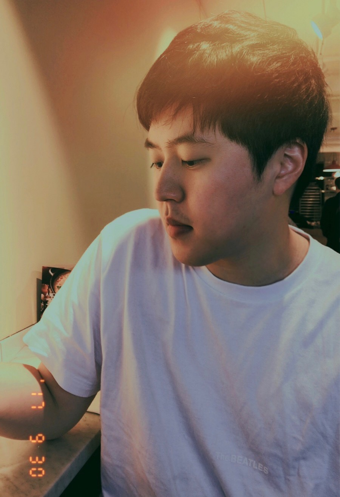

{{ site.occupation }}
{{ site.department }}
{{ site.employer }}
{{ site.email }}
[CV]
[Google Scholar]
[GitHub]
[Twitter]
[Facebook]

I develop and apply optogenetic tools to study physiology and development of excitable cells and tissue. I am advised by Andre Berndt. I received BS in Phyiology and MS in Applied Bioengineering at University of Washington. Before PhD study, I was with startup I co-founded NanoSurface Biomedical, and got trained from Deok-Ho Kim Lab.
Keywords: Optogenetics, Neuroscience, Cardiac Physiology, Electrophysiology, Stem Cell and Developments, Machine Learning